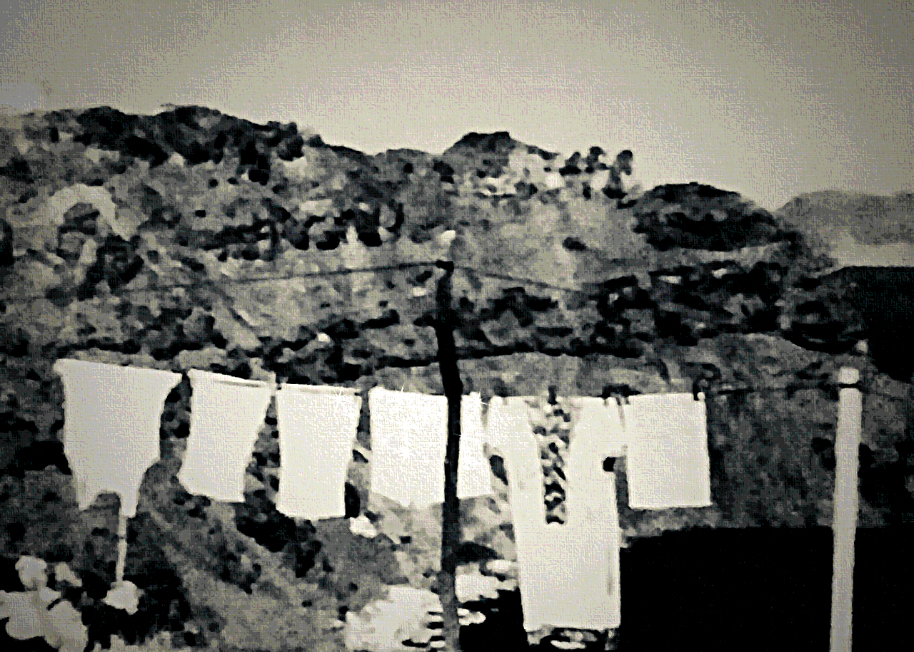
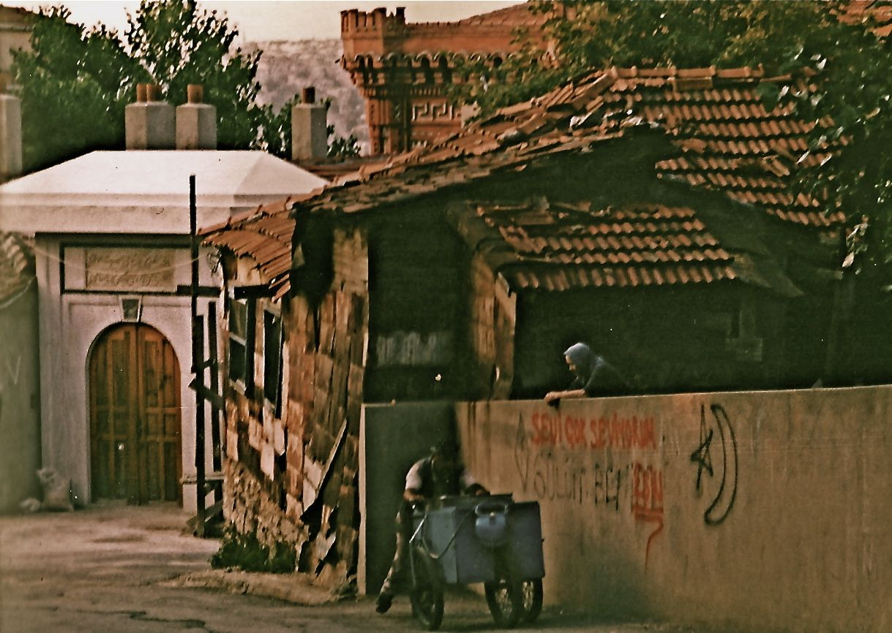
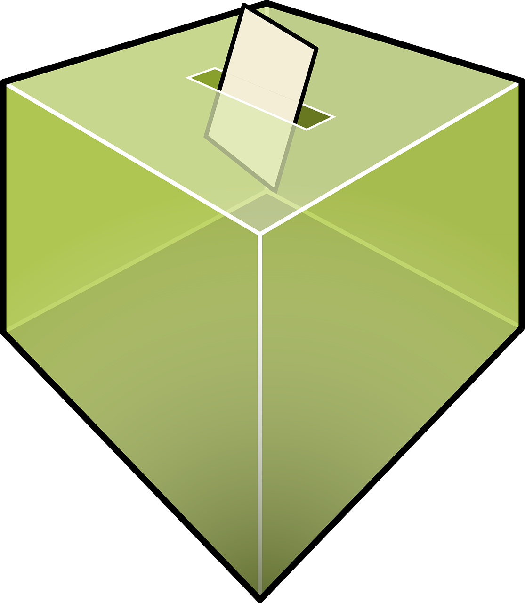

La Russia, l’Eurasia, il multipolarismo
La Russia di oggi non è l’URSS di ieri, e nemmeno quella più remota dell’impero degli Zar. Ma se il presente non è schiacciato sul passato prossimo, ha comunque una storia. Intervista con Aleksandr Dugin
Piotr Merkurj: la pittura della luce
 Un pittore russo tra Oriente e Occidente. Pensare le icone, dipingere nel pensiero. Luce e materia, forma e colore, spiritualità dell’arte e autonomia della cultura.
Un pittore russo tra Oriente e Occidente. Pensare le icone, dipingere nel pensiero. Luce e materia, forma e colore, spiritualità dell’arte e autonomia della cultura.
Dante domestico, Dante musulmano
Del perché Dante può ancora insegnare qualcosa a tutti.
Dante, pare strano ma occorre ricordarlo, stabilisce le coordinate del dire poetico italiano e della sua lingua, segnando la propria preminenza nella cultura del Paese nonché nella sua memoria politica e sociale. La considerazione del suo operato è inevitabile per chiunque, in qualsiasi modo, abbia a che fare con la poesia o con l’Italia. Dante appare a noi domestico, lo chiamiamo sempre per nome e mai per cognome e rappresenta un patrimonio inalienabile delle nostre case. Non può nemmeno mancare nella considerazione dei media che fagocitano ogni cosa e che, in maniera ormai più pervasiva della scuola, ne permettono la diffusione, per quanto a volte soltanto nel nome - ma si sa, basta la parola, dicono… E così va a finire che Dante, insieme alla Costituzione e alla magistratura, rappresenta il feticcio più nominato e abusato dagli italiani.
Brindisi mancati a Berlino

Le origini di Superman, la storia di Metropolis, l’amore perduto di Adolf Hitler. Una separazione sullo scenario di una città separata.
Montale, Kavàfis e le attese capovolte

Strade di Fener

Profilazioni predittive e comportamenti elettorali

Tra la via buddhista e il west. In cammino tra oriente e occidente
Come può l’arte ancora giustificare il mondo? Nietzsche in musica
Ordo Exsequiarum Romani Pontificis
Le fiere feroci dell’editoria
I cerchi concentrici di Canterbury. Soft Machine, Caravan e gli altri

Twink. Un batterista underground tra psichedelia e punk
L’arte delle banane
Spazi vuoti. La mezzaluna tra il Bosforo e il lago di Nemi
I folletti dei Castelli Romani: il lénghelo e gli altri
Trump, Taylor Swift e le equazioni degli atti inconsulti
Ucraina: il confine stracciato dell’Eurasia

Dante domestico, Dante musulmano
Pessimus virus
L’ironia della sorte
Vedere, scrivere, forse cadere (da una finestra, dopo lungo silenzio)
Grand Tour BookWineBar: finalmente si apre
Scrittori che non scrivono
Dal confine. Sul conflitto in Ucraina
Intellettuale chi?
Osservo questo mondo malato. Covid, vaccini e altre occorrenze
ə e ∗: generi e grafemi. Un intervento della Crusca e una nota sull’aleph
L’invisibile e lo specchio. Note sulla poesia di Serafino Murri e la pittura di Mario La Carrubba
Aggredior virus. Intervista con l’autore
.jpg)
Pablo Eucharren: l’arte quale truffa
Maradona superstar
La crudele realtà

San Rocco prima e dopo il Covid
Sospeso e inafferrabile: il tempo al tempo della pandemia
Santi e dèi: Filippo, Giacomo e i Dioscuri
Israele, Islam e neocon americani
Forme della misericordia

Profilazioni predittive e comportamenti elettorali
Gerusalemme: guida possibile alla terra negata
Le nature spirituali di Enrico Fraccacreta
Premonizioni del Settantasette
Colpo di Stato in Russia
Lotta armata, giustizia pop, varia letteratura
Piotr Merkurj: la pittura della luce
Catalogna. La costruzione di un regno inesistente
I giornalisti americani e il giornalismo fascista
Affinità e divergenze tra fascismi e New Deal
Historia di una sbronza
Contro i vaccini. I perché di un’opinione
Il bambino senza tempo

Montale, Kavàfis e le attese capovolte
Italia: terra di transito obbligatorio e permanente
I pornografici profitti del capitale
Brindisi mancati a Berlino
La città mai vista
Il cuore del vuoto
Ritorno a Frascati. La felicità del non più troppo giovane Goethe
Etica del ribelle. La scienza e la storia tra fratture e continuità
Gerardo Marotta in tre atti

La Russia, l’Eurasia e il multipolarismo
Miles Davis e Ferruccio Busoni: lontane risonanze
Trump no-global contro il mondo
Una Roma senza Torri
Dimettersi da frocio
Animali e uomini tra malattia e guarigione
Le avventure di Saro e Giambologna
Il digitale ha distrutto la verità
Bob Dylan. Poetica espressiva e canzone americana
Momenti della fine: tre religioni a confronto
La “Theory”: una filosofia sintetica low cost
Donne e uomini: pregiudizi e dati di fatto
Fidel Castro e l’eredità del socialismo
Una democrazia critica. Note su Habermas
Berlino dopo l’unione
Il continuo ritorno della Dama Bianca
Brian Eno, la guerra in Palestina e la perdita della civiltà
Un vuoto nel cielo
La storia e i giorni. Le bombe su Frascati e la distruzione di Tuscolo
Il burkini e lo scandalo del coprirsi

Cose turche
Nuova Chiesa e nuova politica
Il contagio della violenza

Brexit: come perdere contro se stessi
Storie dalla Jihad
Il disgusto della democrazia
Hikikomori nella prospettiva di Leibniz
Gli spacciatori di felicità
Philip Dick il filosofo mascherato
Il sottoproletariato cognitivo in Italia

Bisogna saper vincere
Jeeg Robot contro i Kattivi
Proposte didattiche per una scuola meticcia
Mein Kampf per tutti
Gender theories. Riflessioni a margine

Scorre il sangue, fertile la terra: la Pasola di Sumba
Manicomio Italia: un quadro clinico
Il neoliberismo: l’ideologia senza nome
Tutti contro il TTIP. E poi?
Un rosario per Pannella
Colonizzazione dell’immaginario e controllo sociale
È tutto invano ciò che un uomo vano fa per bisogno

Dark Reign: politica e religione tra i fumetti e la gnosi
Chi paga per la condivisione?
L’arte egocentrica mondiale sta uccidendo l’arte
L’omicidio Varani e le nuove identità del male
Indagini scientifiche: il giallo e la matematica
Rovine d’Europa
Orizzonti editoriali e mondo digitale

Variazioni della differenza: Derrida e Coleman
Unioni incivili e strutture parentali: dopo Lévi-Strauss
Il codice del mondo
La luce, il paesaggio e il confine in Francesco Biamonti
Il largo sguardo d’Europa e la poesia di Faraòn Meteosès
L’Europa e i limiti della retorica antitedesca
L’ideologia del presente
Cinque questioni su David Bowie
Le guerre di Marcantonio Colonna e lo Statuto di Frascati del 1515

Cul de sac

Fantasmi a Berlino
Is tan bul: diario di bordo
Cocktail bulgaro
La Grecia, l’Europa e i conti della serva

Sguardi obliqui. Bologna e la pittura
Montale prima e dopo il novecento
Siamo morti da sempre
I colori del noir
Charlie Hebdo e la satira integrale
Le parole del sesso taciuto

Il Premio Frascati: la poesia e la provincia del secolo passato
Il tetto sopra Berlino

Halloween dietro le quinte
Il tradire degli eventi
Padre Padrino
La palude letteraria
La popsophia, i greci e la critica del presente
De neolingua

Strade di Fener
Virus
L’uomo e la gallina
La Siria, la guerra e l’informazione
Il cavaliere, le armi e gli amori (o giù di lì)
La clonazione dalle pecore a Dio (passando per Berlusconi)
Maschile e femminile: sessualità e scrittura nel “Basso impero”

I tre pontificati di Benedetto IX
Poesie per un giorno di primavera
«Conscientia mea»: Ratzinger e noi
Lacrime e barche. Sanremo e la politica
Declinazioni dell’autore

Dentro le foibe
Il tredicesimo mese. Aforismi
Contingenze del paesaggio tra Grizzana Morandi e la metropoli globale
Leopardi e Manzoni: il degrado dell’Italia e della sua letteratura
Soundcentral: come divertirsi a Kabul
Al Qaeda network. Il fondamentalismo islamico e le strategie reticolari
Undici volte 11 settembre
Bologna e le dodici chiavi dello zodiaco. Porta Lame, in Fa maggiore
Comunicare è vivere?
L’Italia ha vinto
Le colpe di Batman. L’informazione, i fumetti e le stragi
Spiragli sull’Europa. Quattro poesie.

Musica e contemporanei
2012: apocalissi su misura
Facebook, la borsa e le relazioni
Quando passa Nuvolari. Sulla morte di Lucio Dalla e il sesso degli angeli